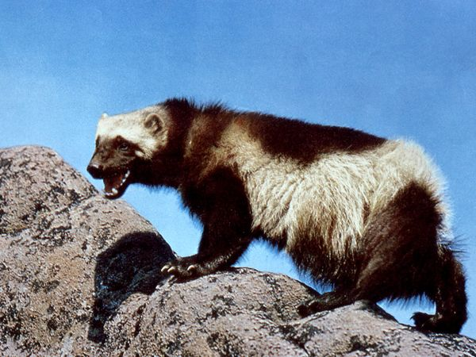

동물
신기한 동물, 식물, 곤충 등 조사해서 기록합니다. 특히 각 생명체들의 번식방법, 생태, 습관, 생김새 등을 기록합니다.
동물
울버린

울버린(영어: wolverine [ˈwʊlvəriːn])은 족제비과에 속하는 족제비의 일종이다. 몸길이 약 65-107cm이고, 몸무게는 10~25kg이다. 학명은 굴로 굴로(Gulo gulo)로, "걸신들린" 이라는 뜻이다. 주요 서식지는 툰드라지대이며, 이외에 스칸디나비아반도, 러시아, 알래스카의 침엽수림등지에도 분포한다.
특징힘이 세고, 겁이 없으며, 자기보다 더 큰 사슴, 산양을 비롯하여, 작은 곰까지 공격한다. 울버린과 같은 곳에 사는 시베리아호랑이, 퓨마, 코요테, 늑대, 곰, 북극곰 등 대형맹수들도 울버린을 보고 자기 먹이를 버리고 도망간다고 한다. 몸에서 악취가 나기 때문에 천적이 거의 없다.